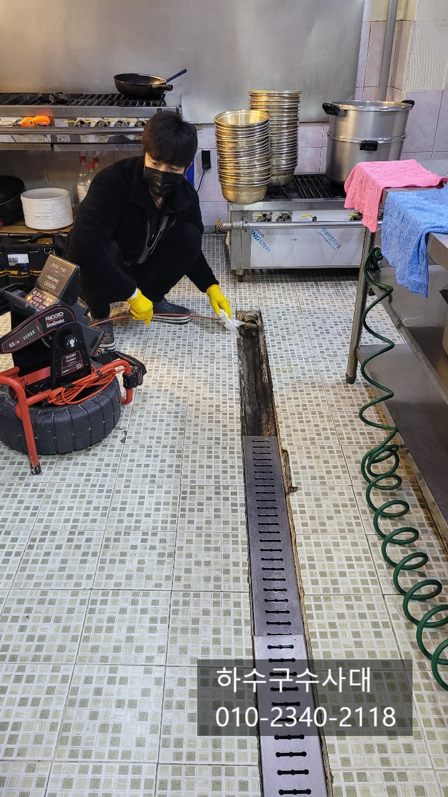
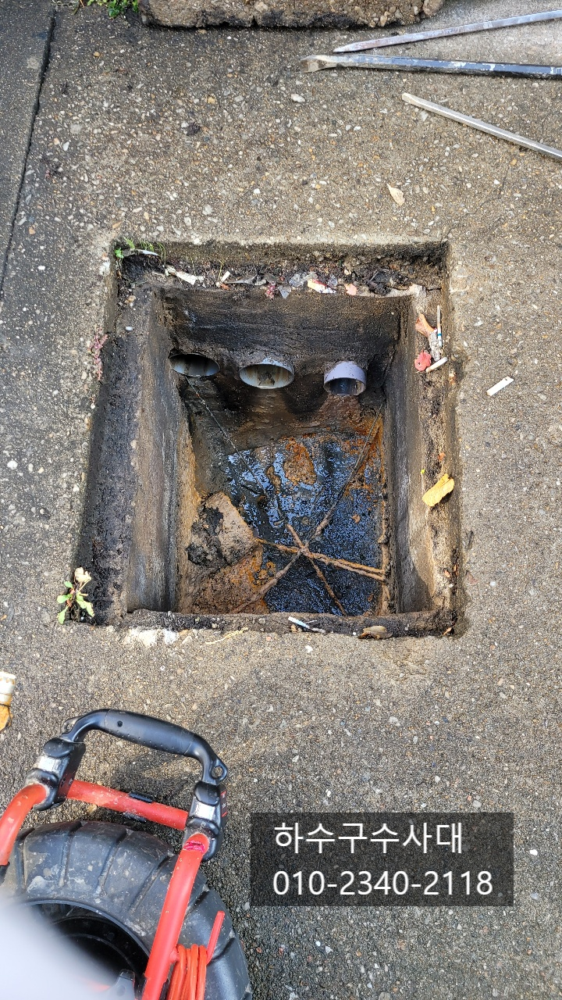
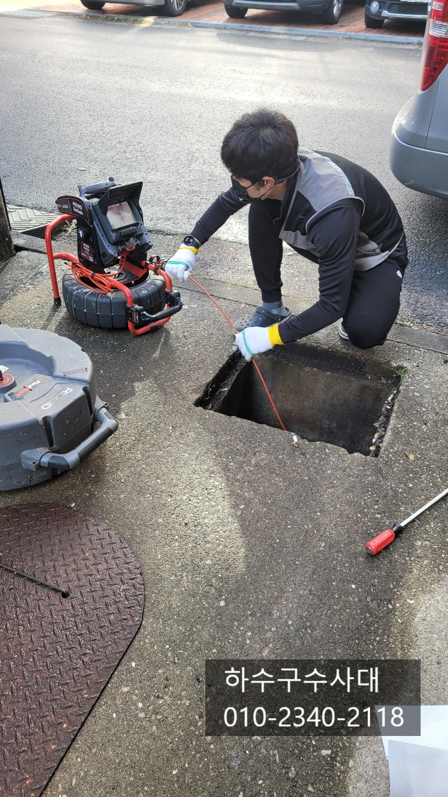
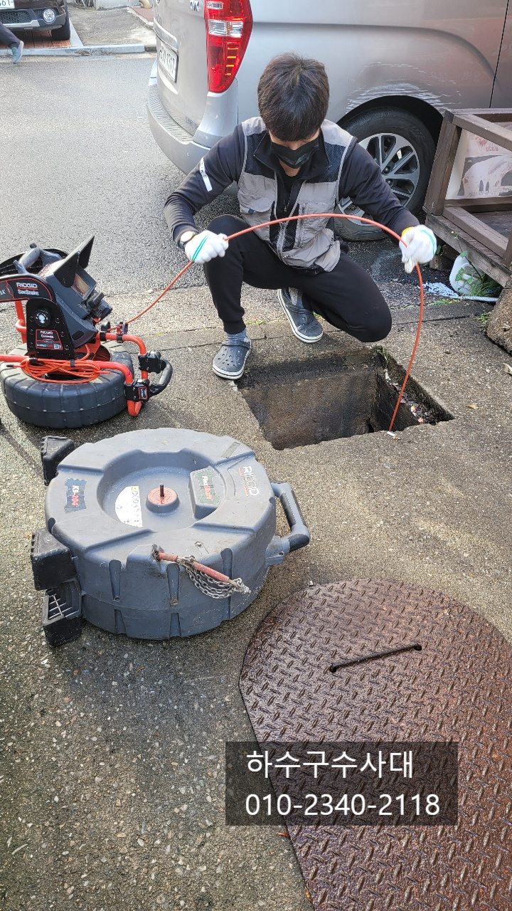
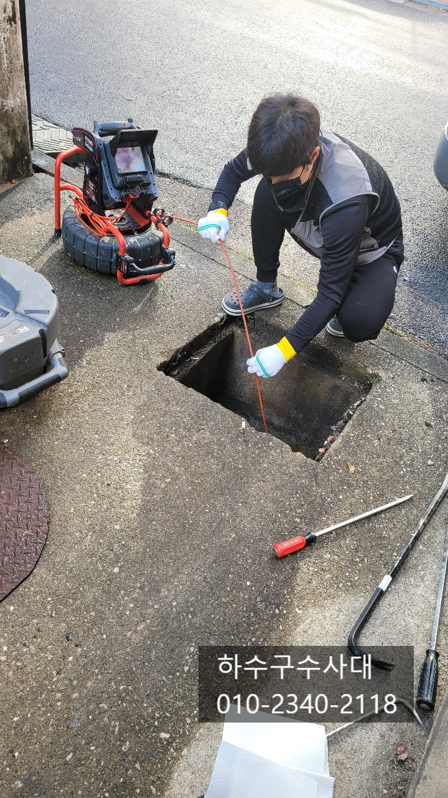
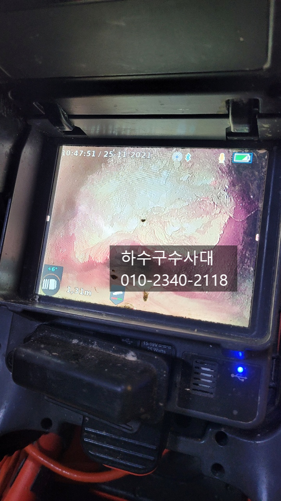

🏠 동탄하수구막힘 진안동 반송동 오산동 하수구막힘
오산 반송동 하수구막힘 전문 시공 후기

📋 작업 개요
- 위치: 오산 반송동, 반송동, 오산
- 서비스 유형: 하수구막힘, 배관막힘, 집수정막힘, 뚫는업체, 고압세척
- 작업 일시: 2021. 11. 26. 0:25
- 업체명: 하수구수사대 (010-5615-2118)
🔍 문제 상황
동탄하수구막힘 진안동 반송동 오산동 하수구막힘
안녕하세요
"하수구수사대" 인사드립니다.
오늘 동탄에 위치한 식당에서 연락을 주셨는데요
물을 많이 쓰면 매일 하수구에서 물이
넘쳐 사장님께서 하루에 한번씩
직접 뚫는 작업을 진행하셨는데 너무
답답하셔서 속시원하게 해결하고자 "하수구수사대"를
불러주셨습니다.
내시경카메라를 배관에 넣어보니 기름덩어리가
배관의 90%이상을 막고 있는것을 확인할수 있는데요
사장님께서 매일 뚫어도 뚫어도 막히는 이유를
바로 확인할수 있었습니다.
영업하신지 2년 되셨다는데 아마도 예전부터
사용하던 배관이여서 기름이 오랜기간 쌓였다고
판단이 되어집니다.
매장오픈전에 빠르게 해결하기 위해
오전에 방문하여 일을 진행하게 되었는데요

🔎 원인 분석
💡 전문가 진단: 하수구수사대010-2340-2118
1층식당 배관만 별도로 되어 있어 집수정에서도
내시경카메라로 검수를 진행하였습니다.
진행순서는 물이 최종적으로 나오는 출수구에서
작업을 하고 매장안에서 작업하는 순서로 진행이
됩니다.
이유는 최종적으로 나오는배관이 막혀있다면
매장안에서 뚫어도 기름덩어리때문에 물이
넘칠수가 있기 때문입니다^^
사장님께서 왜 기름덩어리가 배관에 붙어있는지
궁금해 하시는데요 마찬가지로 현장에가면
고객님들께서도 공통적으로 하는 질문이
"기름을 휴지로 닦아 버리는데 기름이 왜 생기나? "
인데요 아무리 기름을 휴지로 닦아도 조금씩
들어가는 생활기름까지는 막을수 없기 때문입니다.
또한 전세자나 집주인이 바뀔때마다 배관을
사용하는 패턴이나 습관이 달라서 타의적으로
기름이 생길수 있어요.
한번생긴 기름덩어리는 쉽게 없어지지 않는데요

🔧 작업 과정
기계적인 힘으로 떯어뜨리지 않는한
자연스럽게 제거하기는 어렵다고 할수 있습니다.
배관에 기름을 제거하게 위해 플렉스샤프트 장비를
사용하였는데요, 내시경카메라를 보면서 작업이
이루어지기 때문에 더욱더 깨끗하게 제거할수 있어요.
체인이 회전을 하면서 기름덩어리를
갈아서 내보내는 방식인데요 간혹
기름덩어리가 딱딱함 정도에 따라
빼내면서 작업을 하기도 합니다.
고객님께서도 직접적인 원인을 눈으로
보고 눈으로 보면서 해결을하니 속이다
시원하다고 하십니다^^
동탄하수구막힘 진안동 반송동 오산동 하수구막힘
겨울철이 되면서 고기를 삶는 식당의 막힘현상이
많아지는데요 아무래도 추워지면 기름성분이
빠르게 굳기때문에 배관에 붙는 증상도 빠르기 때문입니다.
설거지를 할때는 온수로 해주면서 물을
충분히 흘려보내주는게 좋은데요 기름이 배관에
붙지않게 관리를 해주시는게 좋습니다.
배관에 붙어있던 기름덩어리를 모두 제거하니
물이 시원하게 내려가는것을
확인 할 수 있습니다.
주방안쪽부터 나오는배관까지 세척이
모두 이루어졌는데요 고객님과 내시경카메라를
보면서 일일해 배관상태를 체크하였습니다.
이제부터 관리가 중요한데요
배관이 깨끗해졌지만 관리가 이루어지지
않는다면 점차 기름이 쌓이는것 시간문제입니다.
영업이 끝난뒤 설거지를 하면서 온수를


✅ 작업 완료
충분히 틀어주는것도 하나의 방법입니다.
고객님께서도 작업전과 후의 배관상태를
보시고는 100% 만족해 하셨습니다^^
하수구가 막히거나 자주막히는 이유는 분명히
이유가 있습니다. 하수구문제로 고민중이시라면
언제든지 연락주세요^^
하수구수사대
010-2340-2118




⚠️ 하수구 배관 막힘 예방 및 관리 가이드
- ✅ 머리카락, 비닐, 물티슈 등 물에 분해되지 않는 이물질은 하수구 유입을 절대 금지해 주세요.
- ✅ 하수구 거름망을 씌우고 모여진 이물질은 주기적으로 쓰레기통에 바로 비워주셔야 합니다.
- ✅ 배관 노후가 심할 경우 이물질이 더 쉽게 걸리므로 주기적인 배관 세척(고압세척 등)을 권장합니다.
- ✅ 작업 후 1년 이내 재발 시 하수구수사대에서 무상 A/S 보증 서비스를 제공합니다.
💡 핵심 정리
- 확실한 장비 작업(내시경 점검 및 샤프트 스케일링)으로 원인을 뿌리 뽑습니다.
- 작업 후 1년 이내에 동일한 부위 재발 시 100% 무상 A/S 서비스를 보장합니다.
- 서울 · 경기 · 인천 전 지역에 24시간 언제든 긴급 출동할 수 있도록 항시 대기 중입니다.
❓ 자주 묻는 질문 (FAQ)
🚨 오산 반송동 하수구막힘 문제로 고민이신가요?
정확한 원인 진단과 확실한 시공으로 재발 없는 해결을 약속드립니다.
24시간 긴급 출동 | 서울 · 경기 · 인천 전지역 | 1년 내 재발 시 무상 A/S